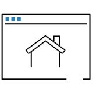
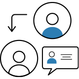

홈
저축안내
장기간부도약적금
상품이용방법
지급안내
링크 복사하기
공유하기
카카오톡
페이스북
네이버
인쇄하기
지급안내
적립 방식
가입자 : 10영업일까지 월 납부액 납입
군인공제회 : 20영업일까지 국방부로 개인별 입금내역 통보
국방부 : 개인별 납입내역 확인 후 25영업일까지 개인별 계정으로 정산지급
지급방법
매월 적금통장에 분할지급
재정지원금(재정지원에 따른 이자 포함)은 가입자가 적금 만기 시 ’확인서’를 제출하는 경우에만 제공
가입자가 재정지원금을 수령 후 제적되어 의무복무를 마치지 못하는 경우에는 적금통장에 지급되어있던 재정지원금을 환수할 수 있다.
중도해약
중도해약 시, 지급 내역
월별 저축금액(공제액+가상계좌 입금액+이자)의 총액
장기간부도약적금의 혜택사항 중 하나인 정부지원금과 이에 따른 이자는 중도해약 시 지급되지 않습니다.
정부지원금 환수 안내
중도해약 시, 매달 저축금액에 따라 적금통장에 지급되었던 정부지원금은 중도해약 신청일을 기준으로 군인공제회에 체류되며, 이후 국방부에 환급됩니다.
정부지원금이란, 장기간부도약적금에 납입하는 금액에 따라 100% 매칭되어 국가에서 제공되는 지원금을 의미합니다.
중도해약 신청방법
홈페이지/우편 신청
본인방문 신청
대리인 방문 신청

홈페이지 신청
ㆍ홈페이지에서 직접해약
- 로그인/회원가입 필수
- ‘인터넷창구 → 마이페이지 → 부분해약/중도해약→ 장기간부도약적금’ 메뉴로 이동하여 해약 신청합니다.
중도해약 신청하기
우편 신청
ㆍ신청서류
- 장기간부도약적금 청구(만기,해약,사망) 신청서
서식다운로드
+ 신청서에
인감도장
또는 행정기관에 등록한
본인 서명
날인
- 인감증명서 또는 본인서명사실확인서 1부(최근 3개월 이내 발급)
- 신분증(주민등록증, 운전면허증 중 택1)
- 본인 명의의 통장
ㆍ우편주소
- (06292)서울시 강남구 남부순환로 2806 군인공제회
본인 방문 신청
ㆍ신청서류
- 장기간부도약적금 중도해약 신청서
서식다운로드
- 신분증(주민등록증, 운전면허증 중 택1)
- 본인 명의의 통장
ㆍ방문주소
- 서울시 강남구 남부순환로 2806 군인공제회 2층 고객센터

대리인 방문 신청
ㆍ신청서류
- 장기간부도약적금 중도해약 신청서
서식다운로드
+ 신청서에
인감도장(인감증명서 제출 필요)
또는 행정기관에 등록한
본인 서명(서명 사실 확인서 제출 필요)
날인
- 회원의 신분증(주민등록증, 운전면허증 중 택1)
- 회원의 인감도장
- 회원의 인감증명서 또는 본인서명사실확인서 1부(최근 3개월 이내 발급)
- 대리인의 신분증(주민등록증, 운전면허증 중 택1)
- 가족(대리인)관계를 증명할 수 있는 서류(예: 의료보험증, 주민등록등본, 가족관계증명서)
ㆍ방문주소
- 서울시 강남구 남부순환로 2806 군인공제회 2층 고객센터
회원 사망시 구비서류
신청서류
장기간부도약적금 청구 (만기,해약,사망) 신청서
서식다운로드
수급권자 신분증 사본
수급권자 은행통장 사본
수급권자 인감증명서 원본 (최근 3개월 이내 발급)
기본증명서 (본인), 가족관계증명서 (본인) 원본으로 각 1부
장기간부도약적금 수령권대표자 선정서 1부 (인감도장 날인, 인감증명서 원본 및 신분증 사본 1부)
신청하기